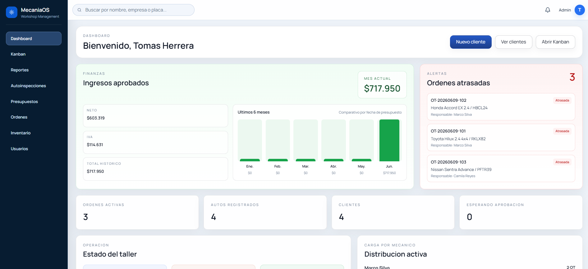

Órdenes y Kanban
Visualiza cada trabajo en curso, asigna responsables y detecta prioridades sin depender de planillas o conversaciones aisladas.
PLATAFORMA PARA TALLERES MODERNOS
MecaniaOS conecta cada parte de tu operación: órdenes, presupuestos, clientes, vehículos, inventario y finanzas. Menos seguimiento manual; más tiempo para entregar un servicio que tus clientes recuerdan.

TODO CONECTADO
Desde la recepción hasta la entrega, MecaniaOS ordena la información para que cada área trabaje con claridad.
Visualiza cada trabajo en curso, asigna responsables y detecta prioridades sin depender de planillas o conversaciones aisladas.
Construye presupuestos detallados, controla sus estados y mantén al cliente informado antes de comenzar cada trabajo.
Todo el historial de atención queda asociado al vehículo: datos, servicios, avances y decisiones tomadas.
Registra movimientos, entradas y uso de repuestos para tener trazabilidad real sobre lo que se necesita y se consume.
Revisa ingresos aprobados, órdenes activas y señales relevantes de la operación desde un dashboard diseñado para decidir rápido.
Documenta el estado del vehículo con evidencias y comparte información ordenada para mejorar la confianza desde el inicio.
UN FLUJO QUE EL EQUIPO ENTIENDE
MecaniaOS acompaña el recorrido completo del vehículo y convierte cada actualización en una operación más transparente.
Crea el cliente, asocia el vehículo y deja la información disponible para el equipo desde el primer contacto.
Organiza tareas, responsables y repuestos en una orden que todos pueden seguir.
Envía presupuestos y avances con un contexto claro que acelera decisiones y reduce incertidumbre.
Cierra cada servicio con trazabilidad y una mejor base para la próxima visita del cliente.
VISIBILIDAD PARA DECIDIR
Identifica órdenes atrasadas, trabajos activos, clientes y señales financieras desde la misma pantalla.
El equipo no necesita reconstruir la historia: la información del vehículo y su servicio ya está conectada.
Da a tu taller una forma consistente de trabajar y una experiencia más clara para quien confía su vehículo.
PREGUNTAS FRECUENTES
Sí. La plataforma está pensada para ordenar la operación diaria, sin importar si el equipo está comenzando o ya gestiona un flujo mayor de vehículos.
Órdenes de trabajo, clientes, vehículos, presupuestos, inventario, autoinspecciones y el estado general de la operación.
Solicita una demo. Revisamos tu forma de trabajo y te mostramos cómo MecaniaOS puede acompañar el flujo real de tu taller.
EL SIGUIENTE PASO ES SIMPLE
Centraliza la operación, mejora la comunicación y entrega una experiencia a la altura de tu trabajo.
Hablemos de tu taller ↗